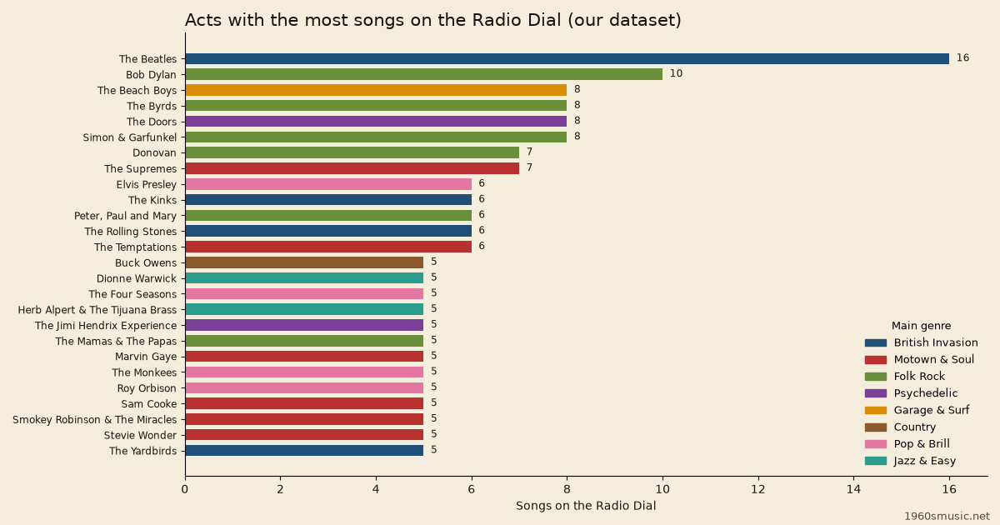

The Beatles lead the 1960s musicians on our Radio Dial, with 16 of its 556 songs.
Bob Dylan comes second with 10.
Every number here comes from our dataset, the songs we checked and cleared for playback.
It is not a sales chart or a census of the decade.

Table of Contents
- The Beatles lead the dial
- The top 20 acts, with ties
- Leading acts year by year
- Leading acts by genre
- How we counted
- FAQ
The Beatles Lead With 16 Songs
The Beatles hold 16 songs, 6 more than anyone else.
They have songs in all 7 years from 1963 to 1969.
They also split across two stations: 10 British Invasion songs and 6 Psychedelic songs.
Below the top, the 1960s musicians on our dial run wide rather than deep.
It holds 280 different acts, and 171 of them (61%) have a single song.
The 26 acts in the table hold 167 songs, 30% of the dial.
The Top 1960s Musicians on the Dial
This table ranks the top 20 acts by song count, with ties shown.
13 acts tie on 5 songs, so the table runs to 26.
Main genre is the station holding most of that act's songs.
Names link to our artist bios where one exists.
| Rank | Act | Songs | Main genre | Years in our dataset |
|---|---|---|---|---|
| 1 | The Beatles | 16 | British Invasion | 1963 to 1969 |
| 2 | Bob Dylan | 10 | Folk Rock | 1963 to 1969 |
| 3 | The Beach Boys | 8 | Garage & Surf | 1962 to 1966 |
| 3 | The Byrds | 8 | Folk Rock | 1965 to 1968 |
| 3 | The Doors | 8 | Psychedelic | 1967 to 1968 |
| 3 | Simon & Garfunkel | 8 | Folk Rock | 1965 to 1969 |
| 7 | Donovan | 7 | Folk Rock | 1965 to 1968 |
| 7 | The Supremes | 7 | Motown & Soul | 1964 to 1969 |
| 9 | Elvis Presley | 6 | Pop & Brill | 1960 to 1969 |
| 9 | The Kinks | 6 | British Invasion | 1964 to 1967 |
| 9 | Peter, Paul and Mary | 6 | Folk Rock | 1962 to 1969 |
| 9 | The Rolling Stones | 6 | British Invasion | 1965 to 1969 |
| 9 | The Temptations | 6 | Motown & Soul | 1965 to 1969 |
| 14 | Buck Owens | 5 | Country | 1963 to 1965 |
| 14 | Dionne Warwick | 5 | Jazz & Easy | 1964 to 1968 |
| 14 | The Four Seasons | 5 | Pop & Brill | 1962 to 1964 |
| 14 | Herb Alpert & The Tijuana Brass | 5 | Jazz & Easy | 1962 to 1968 |
| 14 | The Jimi Hendrix Experience | 5 | Psychedelic | 1967 to 1968 |
| 14 | The Mamas & The Papas | 5 | Folk Rock | 1966 to 1967 |
| 14 | Marvin Gaye | 5 | Motown & Soul | 1963 to 1969 |
| 14 | The Monkees | 5 | Pop & Brill | 1966 to 1968 |
| 14 | Roy Orbison | 5 | Pop & Brill | 1960 to 1964 |
| 14 | Sam Cooke | 5 | Motown & Soul | 1960 to 1964 |
| 14 | Smokey Robinson & The Miracles | 5 | Motown & Soul | 1960 to 1967 |
| 14 | Stevie Wonder | 5 | Motown & Soul | 1963 to 1969 |
| 14 | The Yardbirds | 5 | British Invasion | 1965 to 1966 |
Which Act Leads Each Year?
Counting all the 1960s musicians on the dial, not only the top 26, here is who leads each year.
Busy middle years have clear leaders, while the thinner early and late years end in ties.
- 1960: five acts tie on 2 songs each, out of 43 songs.
- 1961: seven acts tie on 2 songs each, out of 44 songs.
- 1962: Peter, Paul and Mary with 3 songs, out of 44 songs.
- 1963: The Beatles with 4 songs, out of 43 songs.
- 1964: The Supremes with 3 songs, out of 58 songs.
- 1965: four acts tie on 3 songs each, out of 70 songs.
- 1966: Simon & Garfunkel with 5 songs, out of 82 songs.
- 1967: The Doors with 7 songs, out of 85 songs.
- 1968: four acts tie on 2 songs each, out of 43 songs.
- 1969: four acts tie on 2 songs each, out of 44 songs.
Which Act Leads Each Genre?
Each Radio Dial station has its own leader, out of that station's songs.
- British Invasion: The Beatles with 10 of 64 songs.
- Motown, Soul & R&B: The Supremes with 7 of 97 songs.
- Folk Rock: Bob Dylan with 10 of 58 songs.
- Psychedelic Rock: The Doors with 8 of 53 songs.
- Garage & Surf Rock: The Beach Boys with 8 of 52 songs.
- Country: Buck Owens with 5 of 61 songs.
- Pop & Brill Building: Elvis Presley with 6 of 108 songs.
- Jazz & Easy Listening: Dionne Warwick and Herb Alpert & The Tijuana Brass with 5 songs each, out of 63.
How We Counted
The Radio Dial lists 557 songs across eight stations, and 556 are unique.
Wild Thing by The Troggs sits on two stations, so we counted it once here.
Songs are counted by the act credited on the record.
Name changes of the same act are merged:
- Little Stevie Wonder counts as Stevie Wonder.
- The Miracles count as Smokey Robinson & The Miracles.
- The Young Rascals count as The Rascals.
Duets and joint credits stay separate, so Marvin Gaye & Tammi Terrell are not added to Marvin Gaye.
Years in our dataset are the first and last years an act appears on the dial, not career dates.
FAQ
Who were the most popular 1960s musicians?
Popularity is hard to measure, and our dataset does not try.
On our Radio Dial, The Beatles have the most songs, with 16.
Which artist has the most songs on the Radio Dial?
The Beatles have 16 songs.
Bob Dylan is next with 10.
How many artists are on the Radio Dial?
The dial holds 280 different acts across 556 songs.
171 of those acts have one song each.
Why are some big names missing from the top of the list?
The dial is a list we built and cleared for playback, not every hit of the decade.
An act with fewer cleared songs ranks lower here, whatever its fame.
How are duets and name changes counted?
Name changes of one act are merged, such as Little Stevie Wonder into Stevie Wonder.
Duets count as their own credited act.
See the genre mix by year on our genres data page or the data index.
Tune in on the Radio Dial and hear these 1960s musicians for yourself.